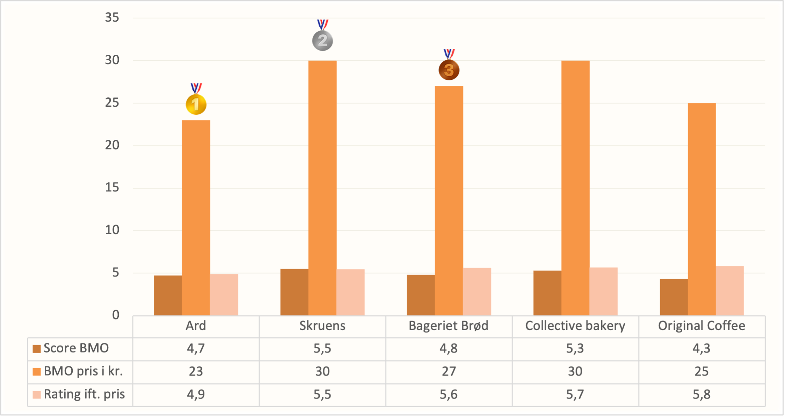

Er du på SU, men stadig klar på noget sprødt, varmt og lækkert? Vi har kortlagt København for at finde de bedste boller med ost — og til priser der ikke kræver en ekstra studielån.
Se top 5 BMO stederJuno the Bakery, Århusgade 48, 2100 København Ø.
Sprød kant, blød midte – og ost i perfekt smeltebalance. En klassiker, der gør enhver morgen bedre.
7-eleven, Østerbro
En ærlig bolle uden pynt, men til gengæld billig nok til, at du stadig har råd til kaffe.
Her er de bedste steder ifølge pris & score:
